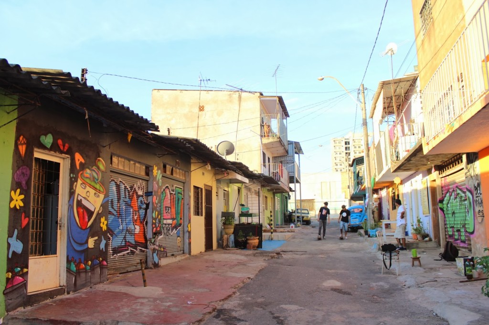

Mercado Sul (Mercadão Sul)
Localização: Taguatinga - DF

Cultura e economia criativa
O Mercado Sul é um espaço tradicional de Taguatinga associado à cultura, à economia criativa e a iniciativas comunitárias. Consulte a programação local antes da visita.